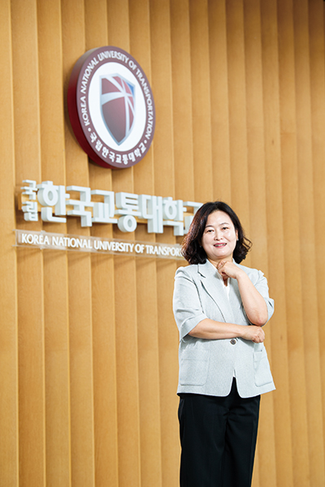

국립한국교통대학교의 성장과 변화를 저는 가장 가까이에서 지켜봐 왔습니다. 대학의 중요한 전환점마다 현장에서 함께했고, 지금은 교무과장으로 근무하며 직원회장을 맡아 구성원의 목소리를 모으는 역할도 이어가고 있습니다.
120년의 역사 속에서 굵직한 통합의 순간들이 기억이 납니다. 처음에는 서로 다른 제도와 문화가 만나 낯설고 어색했지만, 시간이 흐르면서 서로를 이해하고 존중하는 문화가 자리 잡았습니다. 그 끝에 증평캠퍼스는 보건특성화, 의왕캠퍼스는 철도교통특성화로 발전했고, 저는 그 과정을 보며 ‘도전과 성장을 멈추지 않는 대학’이라는 확신과 자부심을 갖게 되었습니다.
우리 대학은 교통·철도·물류 분야라는 뚜렷한 전문성을 기반으로 단단한 뿌리를 내리고 있습니다. 이제는 그 뿌리를 이어, AI와 항공모빌리티 등 미래 산업과 맞닿은 새로운 분야로 확장해가고 있습니다. 무엇보다 학생과 교직원이 서로 가깝게 소통하며 하나의 공동체로 성장하는 따뜻한 분위기는 우리 대학만의 가장 큰 자랑이라고 생각합니다.
다가올 충북대학교와의 통합은 또 한 번의 도전이자 성장의 기회로 느껴집니다. 대학은 이제 지식을 전달하는 공간을 넘어 사회와 산업, 지역과 연결되는 현장이 되어야 합니다. 우리 대학이 가진 잠재력과 구성원의 힘이 모이면, 분명 더 넓은 무대로 나아가리라 믿습니다. 우리 대학이 지역의 인재를 길러내고, 지역사회의 미래를 밝히는 등불이 되기를 진심으로 소망합니다.
2009년 3월, 충주대학교에 부임하며 이곳과 인연을 맺은 지 어느덧 15년이 되었습니다. 교육과 연구, 그리고 지역사회를 잇는 다양한 활동 속에서 대학의 성장과 변화를 함께 겪어왔고, 지금은 교수회장으로서 대학의 발전을 위해 힘을 보태고 있습니다.
우리 대학의 여정은 끊임없는 도전과 혁신의 역사입니다. 통합을 거치며 충주·증평·의왕 세 캠퍼스가 각자의 특성을 살린 전공 중심 체계를 갖추게 되었습니다. 그 결과 교통·물류·모빌리티 특성화는 물론, 바이오·헬스케어 등 지역산업과 맞닿은 연구로도 영역을 확장할 수 있었습니다. 충북대학교와의 통합을 앞둔 지금은 글로컬대학30사업과 RISE사업 등 여러 정부 지원사업을 통해 교육과 연구 역량을 더욱 강화하고 있습니다.
앞으로 대학이 나아가야 할 길은 분명합니다. 충북대와의 통합을 성공적으로 완수해 각 캠퍼스가 특성화의 시너지를 크게 확산해내는 것입니다. 이를 통해 대한민국을 넘어 국제적 수준의 융합 교육과 창의적 연구를 실현해야 합니다.
우리 대학은 철도·교통의 전문 교육으로 시작해 항공, 모빌리티, 바이오, 지역혁신으로 교육과 연구의 폭을 넓혀왔습니다. 그 발자취는 곧 대한민국 산업 발전의 역사이기도 합니다. 개교 120주년을 맞아, 과거의 성과에 머무르지 않고 ‘현장 중심의 실무형 인재 양성’, ‘산업과 함께하는 융합연구’를 통해 새로운 100년을 준비하고 있습니다. 지역과 함께 세계로 나아가는 그 길에, 저는 함께 서 있습니다.
120년의 세월 동안 수많은 변화와 도전을 지나 오늘에 이른 우리 대학이 진심으로 자랑스럽고 쉽지 않았던 길을 함께 걸어온 선배님들과 교직원들께 감사드립니다.
이번 통합 준비 과정에서 구성원들과 지역사회는 각자의 자리에서 여러 생각과 감정을 안고 있었습니다. 우려도 있었지만, 모두가 대학의 미래와 학생들을 진심으로 걱정하는 공통된 마음이 느껴졌습니다. 그 마음을 잇기 위해 저는 학생 대표로서 공청회, 간담회 등 공식적인 자리뿐 아니라 교내외에서 끊임없이 소통하며 합의점을 찾아가는 노력을 계속했습니다.
이제 대학의 전문성은 더욱 강화되고, 캠퍼스가 한층 활기차질 것입니다. 학생들도 긍정적인 변화를 기대하고 있습니다. 다만 변화 속에서 학생들을 위한 세심한 배려가 함께하길 바랍니다. 이번 통합은 단순히 두 대학이 하나로 합쳐지는 일이 아닙니다. 지역 거점 국립대학교로서의 책임과 가능성을 확장하는 새로운 출발이라고 생각합니다. 교통대의 특화된 전문성과 충북대의 종합적 역량이 만나면, 더 균형 잡힌 교육과 연구 환경이 조성될 것이고, 학생들에게는 더 넓은 기회가 열릴 것입니다.
우리 대학은 앞으로도 지역사회와 국가 발전에 기여하는, 더욱 단단한 국립대학으로 성장하리라 믿습니다. 우리는 어떤 길이든 잘 걸어갈 수 있을 거라 믿습니다. 이 발자취 위에 더 단단한 내일이 쌓이길, 그리고 그 안에 우리 모두의 이야기가 오래도록 남기를 바랍니다.
국립한국교통대학교 120년의 역사 속에서 우리나라 산업 발전과 지역사회에 기여하며 수많은 인재를 길러낸 자랑스러운 국립대학으로 자리해왔습니다. 앞으로도 혁신과 도전의 정신으로 미래 모빌리티 분야를 선도하고, 지역과 국가의 균형발전을 이끄는 중심대학으로 더욱 성장하길 기원합니다.
‘글로컬대학30사업’ 통합을 위한 과정에서 목적과 절차에 대한 충분한 설명과 소통이 부족했던 점은 아쉬움으로 남습니다. 그러나 동문회는 대학의 입장과 상황을 꾸준히 공유하고, 공론의 장을 마련해 지역사회와 동문 간의 이해를 이끌어 냈습니다. 그 결과 많은 공감과 지지를 모을 수 있었고 여러 고견을 바탕으로 통합이 안정적인 합의 속에 진행되고 있습니다. 대학 발전의 디딤돌이 될 수 있도록 더욱 힘을 더하겠습니다.
이번 통합은 위기를 기회로 바꾸는 새로운 출발입니다. 인구소멸 위기에 선제적으로 대응하고, 대학의 체질을 특성화 중심으로 개선할 수 있는 중요한 전환점이라 생각합니다. 통합 이후 제도적 보완을 통해 지역 성장의 기반을 마련하고, 교육의 본질적 목표에 충실한 통합이 되길 바랍니다.
곧 우리 대학이 교통·공항·물류, 2차전지, 수소특화단지 등 지역 핵심 산업의 중심에서 미래 인재 육성의 요람으로 발전하리라 믿습니다. 국립한국교통대학교의 개교 120주년을 진심으로 축하드리며, 모든 교직원과 학생 여러분께도 깊은 축하와 응원의 박수를 보냅니다.
충북 충주시 국회의원 이종배입니다. 먼저 국립한국교통대학교 개교 120주년을 진심으로 축하드립니다. 지난 2023년 교통대가 ‘글로컬대학30사업’에 선정되며 5년간 최대 1,000억 원의 국고 지원을 확보한 것은 지역과 대학 모두에게 큰 기회였습니다.
그러나 통합 준비 과정에서는 지역사회의 우려와 대학 간 입장 차이로 어려움도 많았습니다. 특히 교통대 입장에선 충주 지역이 위축될 수 있다는 걱정도 있었습니다. 저는 교육부가 두 대학에 구체적 가이드라인을 제시하고 학과 조정과 정원 문제 등 갈등 요인을 조율하도록 지속적으로 소통하며 중재자의 역할을 하고 있습니다.
이번 통합은 단순한 대학 결합이 아니라, 지역의 미래와 국가 균형발전을 위한 중요한 과제입니다. 두 대학이 공동으로 통합실무분과위원회를 구성하며 논의를 진행하고 있고, 실질적 성과가 도출되길 기대합니다. 통합 이후 관리 역시 매우 중요하며, 교육부의 세심한 관리와 관심이 필요하다고 생각합니다.
전국적으로 학령인구가 급감하며 지역 대학의 존립이 위태로운 상황에서, 충북대와 교통대 통합은 대학의 생존과 발전을 위한 필수 과제입니다. 나아가 지역과 국가 균형발전이라는 중대한 목표를 성공적으로 달성한 사례로 기록될 것입니다.
이번 통합을 통해 국립한국교통대학교와 충북대학교가 120년의 전통을 이어 명품 국립대학으로 자리매김하고 대한민국의 미래 인재를 양성하는 중심이 되기를 기대합니다.
저는 1981년 간호학과를 졸업하고 현재 간호학과 동문회장으로 활동하고 있습니다. 우리 대학은 1905년 개교 이래 훌륭한 인재를 배출하며 사회 곳곳에서 중심적 역할을 해왔습니다.
이번 충북대와의 통합 준비 과정은 쉽지 않았습니다. 대학마다 다른 문화와 정서, 추구하는 방향이 달라 갈등이 생기는 것은 자연스러운 일이었지만, 초기에는 불협화음이 생기기도 했습니다. 현실과 맞지 않는 정책과 상황 속에서 크고 작은 어려움을 겪기도 했습니다. 그럼에도 학교 발전과 미래 인재 양성을 위해 상생의 길을 선택하고, 지속 가능한 방향으로 모색하는 것이 중요하다고 생각합니다.
이번 글로컬대학 통합은 단순히 자원과 인프라를 합치는 것에 그치지 않습니다. 자원 효율화를 통해 대학 운영의 지속 가능성을 높이고, 특성화와 차별화 전략을 강화할 수 있습니다. 연구 역량과 교수진 간 협력도 확대되어 교육·연구 양 측면에서 시너지 효과가 기대되며, 학생들에게 더 다양한 학습 기회를 제공할 수 있습니다. 또한 지역사회와 연계한 인재 양성을 실현할 수 있는 것도 이번 통합의 큰 의미입니다.
글로컬대학으로서 지역사회와 상생하며, 장기적으로 대학의 경쟁력을 높이는 계기가 될 것입니다. 앞으로 우리 대학이 개교 120주년의 역사와 전통을 자랑스럽게 이어가길 바라고 글로컬대학으로 더 넓고 새로운 미래를 만들어가기를 기대합니다.